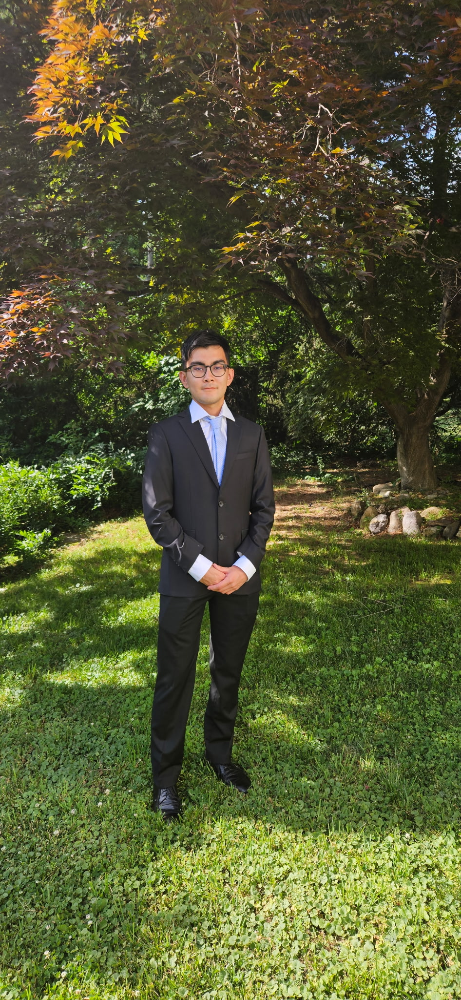
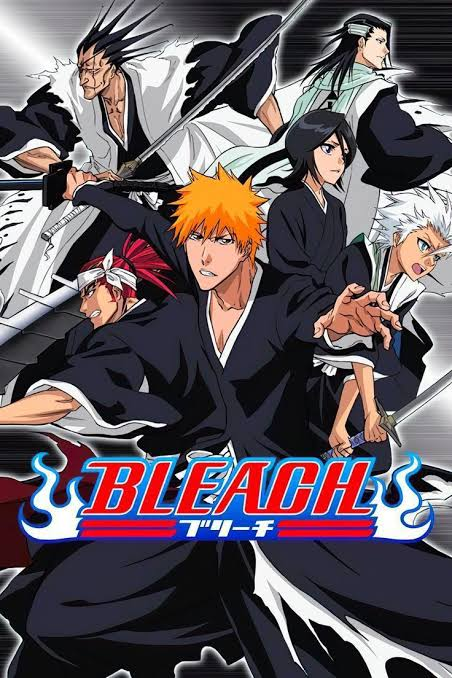
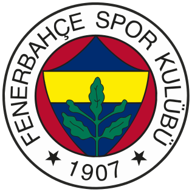
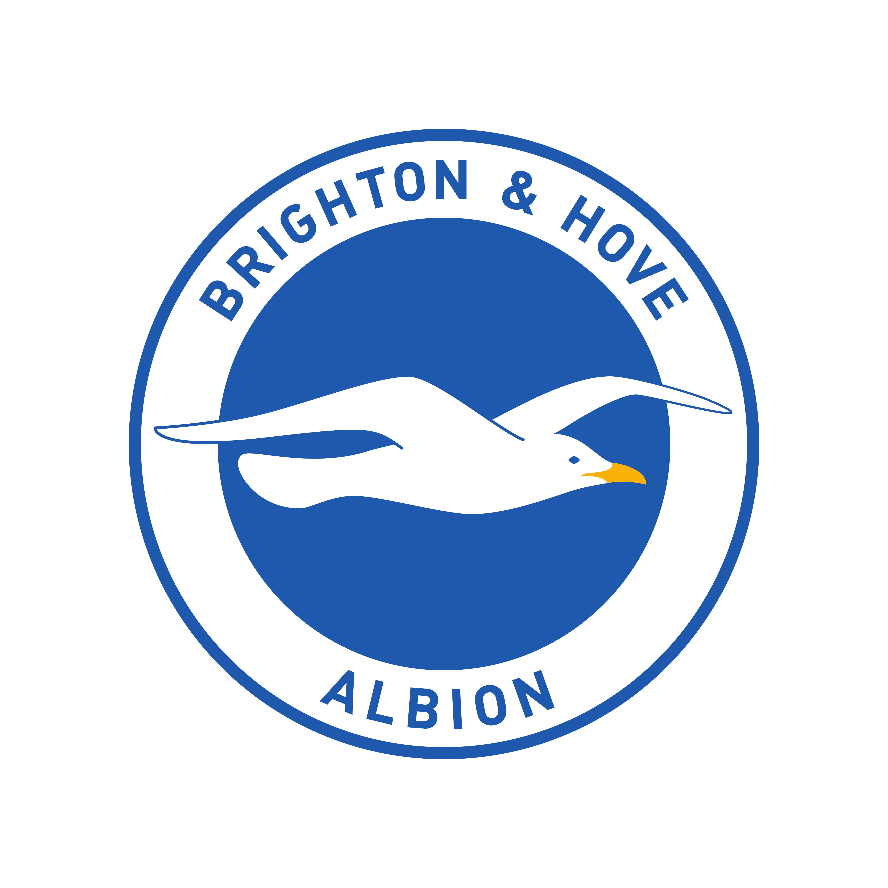
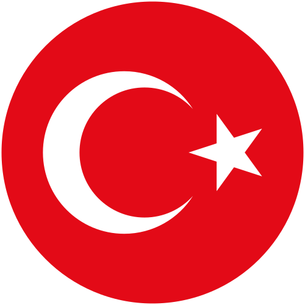
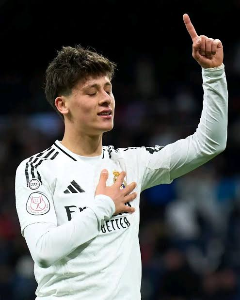
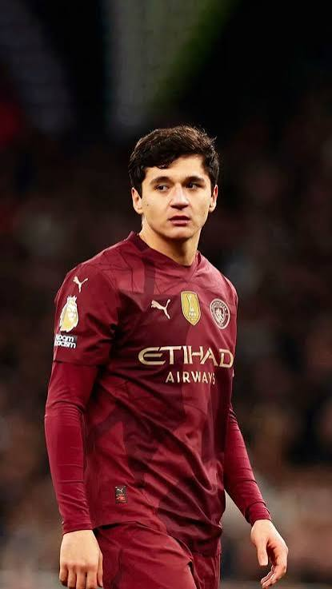
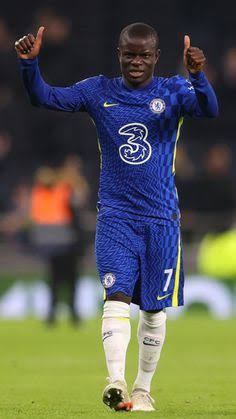

As a first-generation Turkish & Uzbek student, I bring a global perspective to my work. I'm naturally curious, whether I'm analyzing geographic trends or debugging code. I thrive in collaborative environments where we can bounce ideas around to solve complex problems. When I step away from the keyboard, you'll find me analyzing soccer transfer markets or strategizing in various games.
Hello, I'm
Babur Ceynek
A freshman in Computer Science at Stevens Institute of Technology, pursuing a minor in Cybersecurity.
Based in the New York metropolitan area.
Expected to graduate from Stevens Institute of Technology in 2030.

About
Skills
Programming
Java, Python
Software & Tools
Google Workspace, Excel, OnShape, Godot, Github, Arduino Uno Rev3, Autodesk AutoCad
Experience
Walgreens — Customer Service Associate
- Processed high-volume customer transactions efficiently while maintaining top-tier customer satisfaction standards.
- Managed photo center operations, ensuring accurate processing, printing, and packaging for daily orders.
- Executed routine inventory audits and shelf restocking to maintain strict product quality and store organization.
- Coordinated FedEx logistics for customer drop-offs and check-ins, streamlining the daily shipping workflow.
Volunteer
- Mentored youth with disabilities in adaptive sports and recreational activities, fostering inclusion and building self-confidence.
- Tutored students in one-on-one and small-group settings, directly supporting and improving their academic performance.
- Organized event logistics and distributed meals at the local mosque to support community outreach programs.
- Participated in local community cleanup initiatives to maintain and revitalize public parks and streets.
Varsity Tennis Team Captain
- Directed practices and mentored incoming team members to build foundational skills and team cohesion.
- Designed targeted training sessions to develop players’ technical abilities and prepare them for competitive matches.
- Recognized with the Coaches Award, Sportsmanship Award, and Most Improved Award for exceptional leadership and dedication.
Leadership & Awards
STEM Academy Ambassador
- Represented the STEM Academy at major school events, actively engaging prospective students to drive program interest.
- Championed STEM education and student involvement through targeted outreach and recruitment campaigns.
- Engaged in industry field experiences to bridge classroom theory with real-world STEM applications.
Multi Cultural Club Advisor
- Orchestrated diverse cultural events that successfully promoted inclusion and broad community engagement.
- Collaborated on the planning committee to execute large-scale, school-wide multicultural initiatives.
- Curated educational materials based on global cultural research to effectively raise awareness among the student body.
Student Of Action Award
Recognized for excellent work ethic, diligence, and high achievement.
Hobbies
When I’m not working on my current project, I enjoy watching anime, playing video and board games, and keeping up with soccer.
Favorite Anime

Bleach
Favorite Video Games

Destiny 2

Overwatch

Little Nightmares
Soccer
I enjoy following soccer and keeping up with the sport in my free time.
Clubs & National Teams

Fenerbahçe- Brighton & Hove Albion

- Uzbekistan National Team

Turkish National Team
Players

Arda Güler
Abdukodir Khusanov
N’Golo Kanté Cristiano Ronaldo
Cristiano Ronaldo
Projects
Current project
Personal Portfolio Website
A home for my background, skills, and projects, featuring a responsive layout and an interactive particle background.
In progress
Soccer Transfer Value Predictor
I’m currently building a soccer transfer value predictor to estimate players’ transfer values.
Contact
Let's Connect
Interested in collaborating on a project or talking about technology? I'd love to connect.